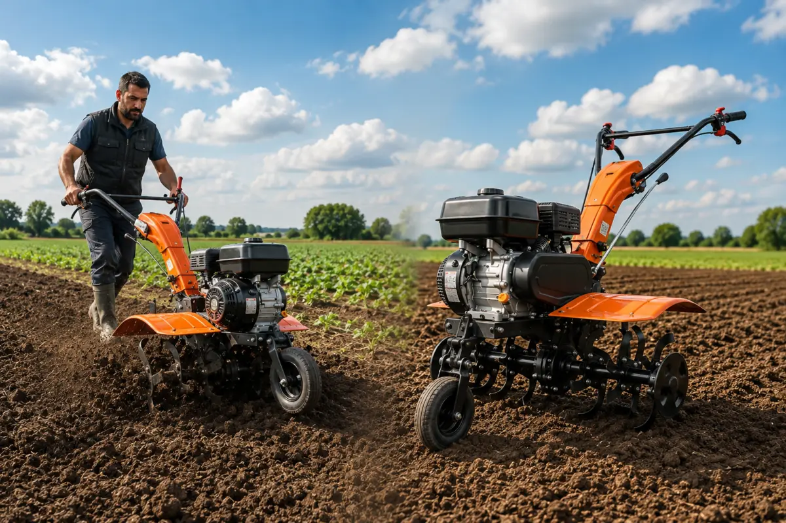
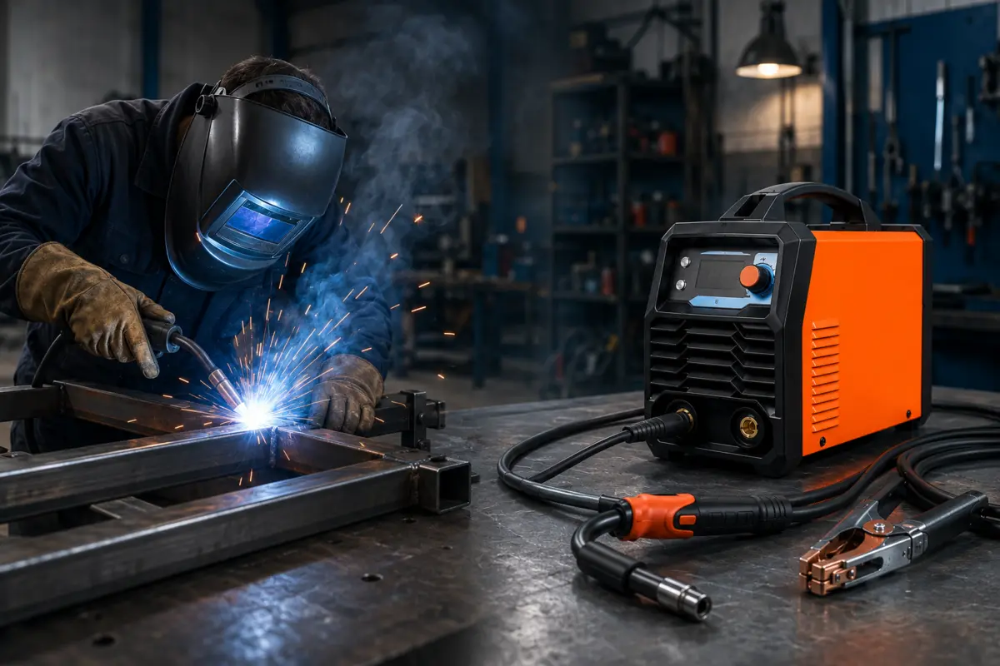
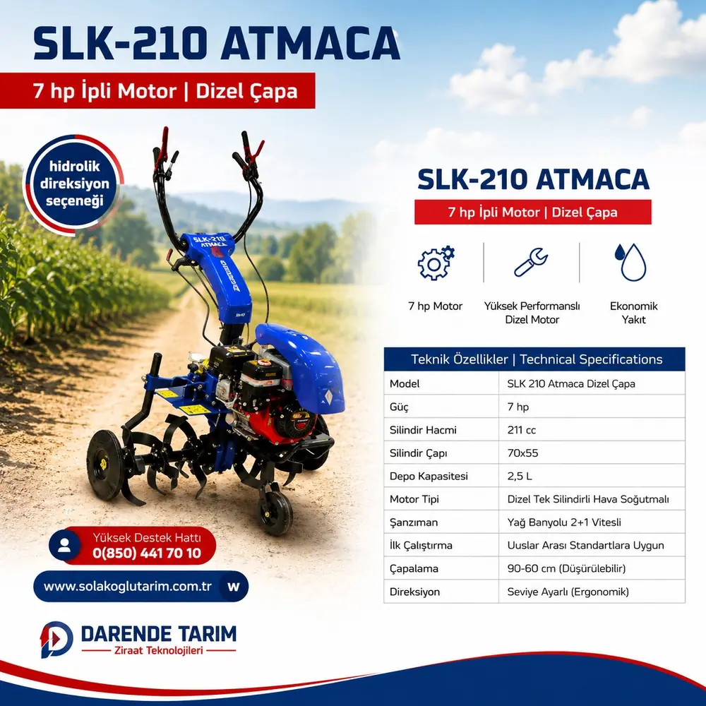

Geniş Ürün SeçeneğiBinlerce ürün tek çatı altında
Darende Tarım • Tarım & Teknik EkipmanTarım & Teknik Ekipman
Darende TarımAletleri & Ekipman
Darende Tarım; çapa makineleri, jeneratörler, kaynak makineleri ve profesyonel ekipmanlarda güvenilir ürün seçenekleri sunar. Darende’den Türkiye’nin 81 iline kargo imkânı.Darende Tarım'da çapa makineleri ve profesyonel ekipmanlar. Türkiye’nin 81 iline kargo.
Güvenilir MarkalarDünyaca ünlü markalarla kalite
Profesyonel EkipmanTarım ve sanayi için üstün performans
Uzman DestekSatış öncesi ve sonrası profesyonel destek
Uygun Fiyat
Türkiye Geneli Kargo
Güvenilir Hizmet
7/24 WhatsApp İletişim
Darende • Malatya • Gürün • Elbistan
Çalıştığımız Markalar
Tıklanabilir marka blokları ile ürün gruplarına hızlı erişim sağlayın.
Marka Ürünleri
Tüm marka ürünleri →Öne Çıkan Ürünler
Darende Tarım ürün seçkisinden öne çıkan makineler.
Kurumsal Güç
Neden Darende Tarım?
Tarım ve teknik ekipmanlarda kurumsal duruşu, yerel erişimi ve hızlı WhatsApp iletişimini tek sayfada birleştiren güçlü bir hizmet yapısı.
Öne Çıkan Ürün Grupları
Tarım ve teknik ekipmanlarda öne çıkan ürün gruplarını keşfedin.
Çapa Makineleri
Toprak İşlerinde Güçlü Çözümler
Bahçe, tarla ve toprak işleme ihtiyaçlarınıza uygun çapa makinelerini inceleyin.

Kaynak Makineleri
Profesyonel Kaynak Makineleri
Atölye ve saha işleriniz için farklı kaynak makinesi seçeneklerini keşfedin.

Kategoriler
Darende tarım aletleri, çapa makineleri, jeneratör ve teknik ekipman gruplarını kategori bazında keşfedin.

Çapa Makineleri
Çapa makineleri ve römorklu tarım araçlarını inceleyin.

Jeneratörler
Portatif güç çözümleri.

Kaynak Makineleri
Atölye ve saha ekipmanları.

Hava Kompresörleri
Atölye için hava çözümleri.

Motorlu Testereler
Budama ve kesim ekipmanları.

Bahçe Ekipmanları
Bakım ve teknik ürün grupları.

Zirai Ekipmanlar
Farklı kullanım alanları için ekipmanlar.

Yedek Parça & Aksesuar
Makine ve ekipman tamamlayıcıları.
Hakkımızda
Darende Tarım Aletleri ve Teknik Ekipman
Darende Tarım, Darende’de tarım aletleri ve teknik ekipman arayanlar için çapa makineleri, Karadeniz kapalı çapa makineleri, jeneratörler, kaynak makineleri, kompresörler, motorlu testereler, bahçe ve zirai ekipman seçenekleri sunar. Darende ve Malatya başta olmak üzere Gürün ve Elbistan çevresine hizmet verir; Türkiye geneline kargo imkânı sağlar.
Darende / Malatya
Gürün ve çevresi
Elbistan ve çevresi
Türkiye geneli kargo

İletişim ve Hizmet Bölgeleri
Harita destekli iletişim alanı ile konum, telefon ve WhatsApp erişimini tek blokta sunun.
Harita
Darende Merkez Konum
Google Maps / Yol Tarifi →
Mağaza Noktası
Darende merkezde kolay ulaşım ve ürün bilgilendirme desteği.
Hizmet Bölgeleri
Darende, Malatya, Gürün, Elbistan ve Türkiye geneli kargo desteği.
İletişim
Darende, Malatya ve çevresi için hızlı ulaşım
Darende
Malatya ve ilçeleri
Gürün ve çevresi
Elbistan ve çevresi
Türkiye’nin 81 iline kargo
Tarım Rehberi
Ürün seçimini kolaylaştıran kısa bilgiler.
Çapa Makinesi Seçerken Nelere Dikkat Edilmeli?
Toprak yapısı, kullanım alanı ve makine boyutu temel seçim kriterleridir.
Bahçe ve tarla büyüklüğü, zeminin sertliği, ekipmanın ağırlığı ve servis/yedek parça erişimi birlikte değerlendirilmelidir.
Jeneratör Seçerken Güç İhtiyacı Nasıl Belirlenir?
Çalıştırılacak cihazların toplam yükü ve ilk kalkış gücü dikkate alınmalıdır.
Jeneratör seçiminde sürekli güç ile ilk çalışma anındaki yüksek yükler birbirinden ayrılmalı; ürünün gerçek teknik etiketi esas alınmalıdır.
Motorlu Testere Seçiminde Temel Noktalar
Pala boyu, kullanım amacı, ağırlık ve bakım imkânı önemlidir.
Budama, odun kesimi veya daha yoğun işlerde ihtiyaç farklıdır. Güvenlik ekipmanı ve üretici bakım talimatları da seçim sürecinin parçasıdır.
Aradığınız Ürünü Birlikte Bulalım
Ürün modeli, fiyat bilgisi veya teknik detay için WhatsApp üzerinden ulaşın.